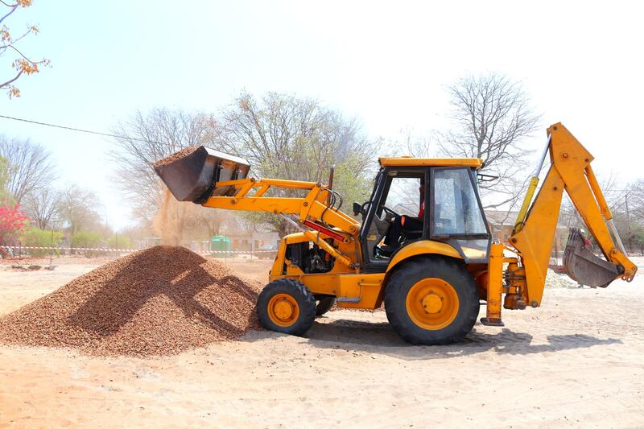
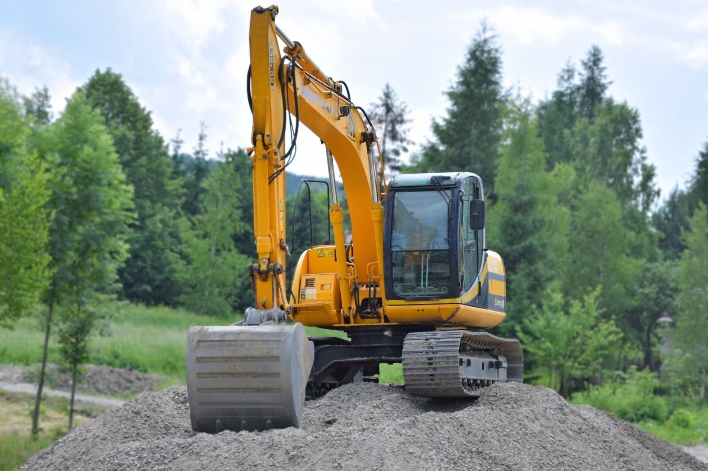
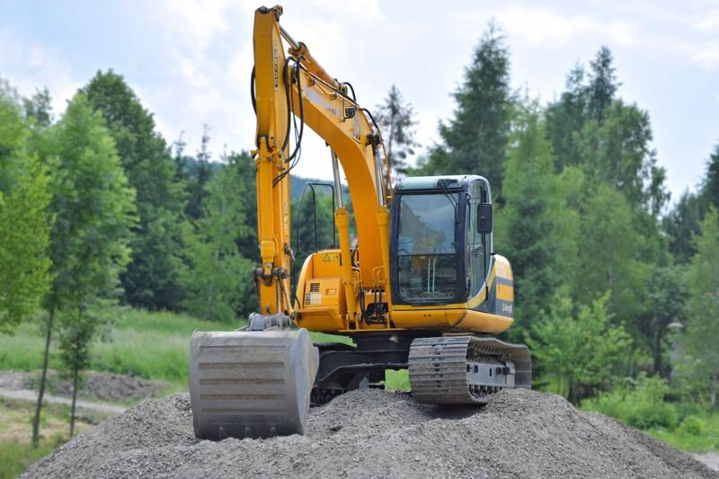
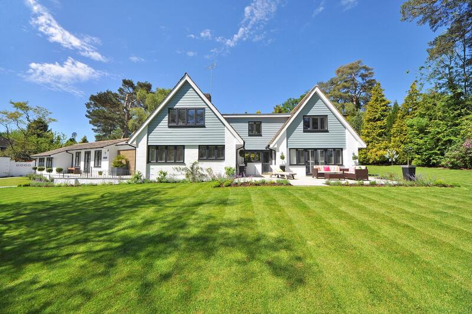

Markarbeten
Schakt och material
- Moment
- Schakt inför grund samt leverans av grus och makadam

Start / Verksamhet / Markarbeten
Markarbeten är grunden i nästan alla våra entreprenader. Vi utför schaktning, grundläggning och återfyllning med egna maskiner och transporter – anpassat efter markdjup, stenighet och jordtyp, som varierar mycket i Halland.
Vi levererar rätt material till rätt plats – matjord, grus, makadam och sand – och forslar bort schaktmassor med rätt dokumentation. Egen lastbil och hjullastare gör att vi inte är beroende av andra för att hålla tidplanen.

Markarbeten

Markarbeten

Tomtplanering
Hur kan vi hjälpa dig med markarbeten?
Kontakta osseller ring direkt: 0735-23 53 16